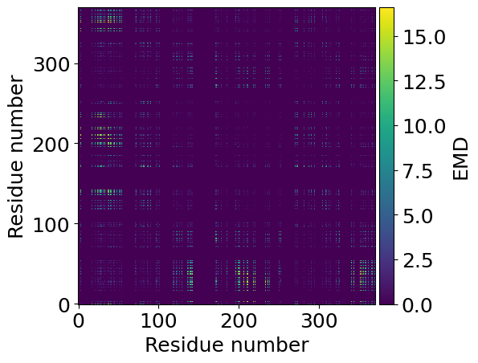
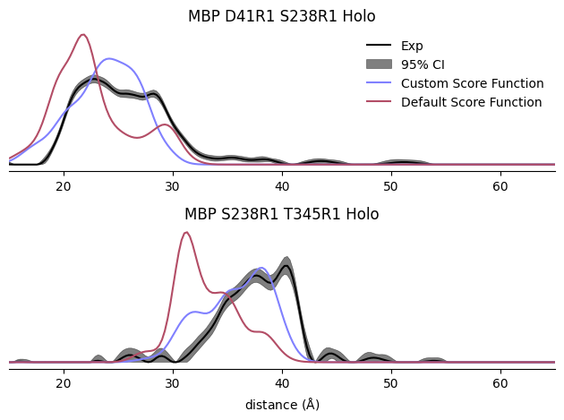

χLife
χLife
Side chain ensembles
Rotamer Libraries
Protein
Utils
Examples
Basic Spin Labeling
SDSL Site Screen
Adding Custom Spin Labels
Repacking with MCMC Sampling
Membrane Docking
Custom Energy Function
Frequently Asked Questions
χLife
Examples
View page source
Examples
This is a thumbnail gallery:
Basic Spin Labeling

SDSL Site Screen
Adding Custom Spin Labels
Repacking with MCMC Sampling
Membrane Docking

Custom Energy Function